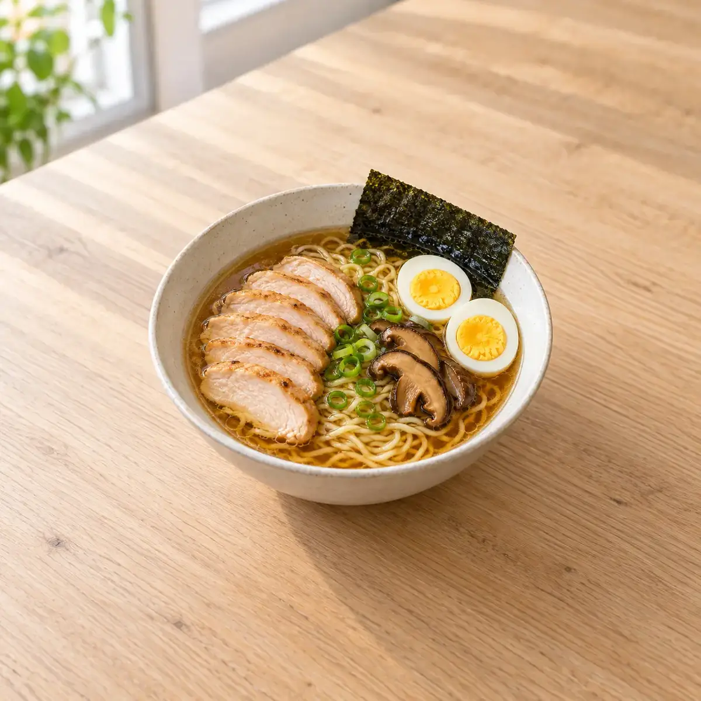

Ramen shoyu

Descripcion
Sopa de fideos original japonesa con un gusto macerado y sabroso.
Ingredientes
- 1L de caldo de pollo
- 1 diente de ajo picado y jengibre rallado
- Fideos para ramen
- 4 cucharadas de soja
- 1 cucharada de vino blanco
- 2 cucharaditas de azucar
- 2 huevos
- Cebollino
- Soja
- Azucar
Preparacion
- Cocer los huevos en agua hirviendo durante 6 minutos y enfriar inmediatamente
- En una sarten, calentar un chorro de soja con una cucharada de azucar hasta que burbujee
- Pelar los huevos y saltearlos en esta mezcla durante 2 minutos hasta que caramelicen y queden marrones
- Hervir el litro de caldo de pollo con el ajo picado y el jengibre para potenciar su sabor
- Tare: En un cazo aparte, mezclar 4 cucharadas de soja, el vino blanco y las 2 cucharaditas de azucar. Cuando burbujee, bajar el fuego y dejar reducir 1 minuto
- Hervir los fideos en agua aparte durante 5 o 6 minutos y escurrir bien
- Dividir el tare en dos cuencos
- Verter el caldo caliente sobre el tare
- Agregar los fideos escurridos
- Coronar con el cebollino picado y el huevo cortado por la mitad
Home